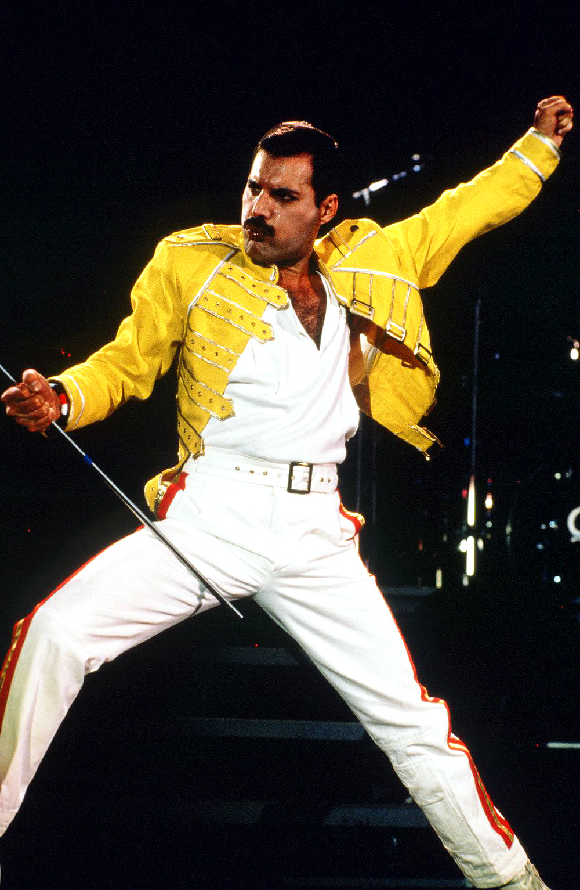

Freddie
Mercury
Who Was Freddie Mercury?
Freddie Mercury was a singer-songwriter and musician whose music reached the top of U.S. and British charts in the 1970s and 1980s. As the frontman of Queen, Mercury was one of the most talented and innovative singers of the rock era. Born Farrokh Bulsara in Tanzania, Mercury studied piano in boarding school in India, then befriended numerous musicians at London's Ealing College of Art. Mercury died of AIDS-related bronchial pneumonia on November 24, 1991, at age 45.
